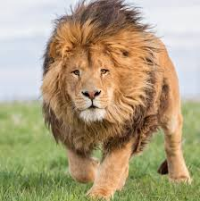

this is information abour lion
The lion (Panthera leo) is a large cat of the genus Panthera, native to Sub-Saharan Africa and India. It has a muscular,
broad-chested body; a short, rounded head; round ears; and a dark, hairy tuft at the tip of its tail.
It is sexually dimorphic;
adult male lions are larger than females and have a prominent mane. It is a social species, forming groups called prides.
A lion'Sub-Saharan
pride consists of a few adult males, related females, and cubs. Groups of female lions
usually hunt together, preying mostly on medium-sized and large ungulates. The lion is an apex and keystone predator.

this is information about the tiger
The tiger (Panthera tigris) is a large cat and a member of the genus Panthera native to Asia. It has
a powerful,
muscular body with a large head and paws, a long tail and orange fur with black, mostly vertical stripes.
It is traditionally
classified into nine recent subspecies,
though some recognise only two subspecies, mainland Asian tigers and the island tigers of the Sunda Islands.